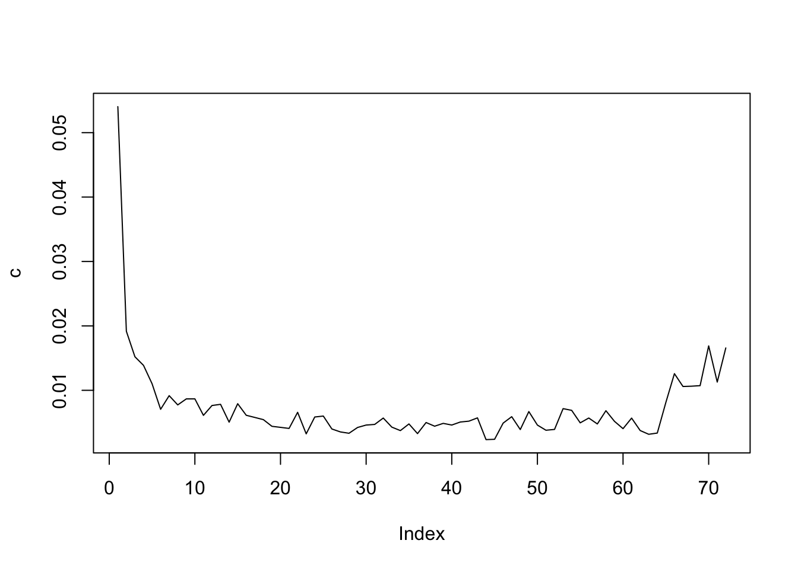

Predicting Churns
The purpose of this section is to use tree-based algorithm to predict churn of a customr based on some explanatory variable. The data I use is the Customer Support data from IBM Watson Analytics.
churnAnalysis <- fread("WA_Fn-UseC_-Telco-Customer-Churn.csv")
churnAnalysis <- as.data.frame(churnAnalysis)
head(churnAnalysis)## customerID gender SeniorCitizen Partner Dependents tenure PhoneService
## 1 7590-VHVEG Female 0 Yes No 1 No
## 2 5575-GNVDE Male 0 No No 34 Yes
## 3 3668-QPYBK Male 0 No No 2 Yes
## 4 7795-CFOCW Male 0 No No 45 No
## 5 9237-HQITU Female 0 No No 2 Yes
## 6 9305-CDSKC Female 0 No No 8 Yes
## MultipleLines InternetService OnlineSecurity OnlineBackup
## 1 No phone service DSL No Yes
## 2 No DSL Yes No
## 3 No DSL Yes Yes
## 4 No phone service DSL Yes No
## 5 No Fiber optic No No
## 6 Yes Fiber optic No No
## DeviceProtection TechSupport StreamingTV StreamingMovies Contract
## 1 No No No No Month-to-month
## 2 Yes No No No One year
## 3 No No No No Month-to-month
## 4 Yes Yes No No One year
## 5 No No No No Month-to-month
## 6 Yes No Yes Yes Month-to-month
## PaperlessBilling PaymentMethod MonthlyCharges TotalCharges
## 1 Yes Electronic check 29.85 29.85
## 2 No Mailed check 56.95 1889.50
## 3 Yes Mailed check 53.85 108.15
## 4 No Bank transfer (automatic) 42.30 1840.75
## 5 Yes Electronic check 70.70 151.65
## 6 Yes Electronic check 99.65 820.50
## Churn
## 1 No
## 2 No
## 3 Yes
## 4 No
## 5 Yes
## 6 Yeslibrary(party)
sapply(churnAnalysis, function(x) sum(is.na(x)))## customerID gender SeniorCitizen Partner
## 0 0 0 0
## Dependents tenure PhoneService MultipleLines
## 0 0 0 0
## InternetService OnlineSecurity OnlineBackup DeviceProtection
## 0 0 0 0
## TechSupport StreamingTV StreamingMovies Contract
## 0 0 0 0
## PaperlessBilling PaymentMethod MonthlyCharges TotalCharges
## 0 0 0 11
## Churn
## 0churnAnalysis <- churnAnalysis[which(!is.na(churnAnalysis[,"TotalCharges"])),]Then we look at what variables are continuous, and they are: “tenure”, “MonthlyCharges” and “TotalCharges”
To use decision tree, we need to convert the continuous variables to categorical variables be setting some thresold. But first, let’s split the data into training, validation and test sets.
count(churnAnalysis,'Churn') ## library plyr## Churn freq
## 1 No 5163
## 2 Yes 1869## randomize the data first
churnAnalysis <- churnAnalysis[sample(1:nrow(churnAnalysis)),]
## then split
churnAnalysisTraining <- churnAnalysis[1:(nrow(churnAnalysis)/2),]
churnAnalysisValidation <- churnAnalysis[(nrow(churnAnalysis)/2+1): (3*nrow(churnAnalysis)/4),]
churnAnalysisTest <- churnAnalysis[(3*nrow(churnAnalysis)/4+1),nrow(churnAnalysis),]hist(churnAnalysisTraining[,"MonthlyCharges"],breaks=40)
MonthlyChargesClass <- ifelse(churnAnalysis[,"MonthlyCharges"]<=30,"<=$30",">30$")As the distribtion of “MonthlyCharges” does look like normal distribution and there seems to be a spike for monthly charges under 30. Hence, I try to split the data into 2:
1. monthly charges $ 30 $
2. monthly charges $ > 30 $
hist(churnAnalysisTraining[,"TotalCharges"],breaks=40)
TotalChargesClass <- ifelse(churnAnalysis[,"TotalCharges"]<=500,"<=$500",">500$")hist(churnAnalysisTraining[,"tenure"],breaks=80)
TenureClass <- churnAnalysis[,"tenure"]
TenureClass[which(churnAnalysis[,"tenure"] >=70)] <- ">=70"
TenureClass[which(churnAnalysis[,"tenure"] <=5)] <- "<=5"
TenureClass[which(churnAnalysis[,"tenure"] >5 & churnAnalysis[,"tenure"] <70)] <- "between"Apply the class transform to all 3 data sets
churnAnalysis["MonthlyCharges"] <- MonthlyChargesClass
churnAnalysis["TotalCharges"] <- TotalChargesClass
churnAnalysis["tenure"] <- TenureClass
churnAnalysisTraining <- churnAnalysis[1:(nrow(churnAnalysis)/2),]
churnAnalysisValidation <- churnAnalysis[(nrow(churnAnalysis)/2+1): floor(3*nrow(churnAnalysis)/4),]
churnAnalysisTest <- churnAnalysis[floor(3*nrow(churnAnalysis)/4+1):nrow(churnAnalysis),]run the decision tree using ctree from package:party
library(party)
tree <- ctree(Churn~gender+SeniorCitizen+Partner+Dependents+tenure+PhoneService+MultipleLines+InternetService+OnlineSecurity+OnlineBackup+DeviceProtection+TechSupport+StreamingTV+StreamingMovies+Contract+PaperlessBilling+PaymentMethod+MonthlyCharges+TotalCharges, churnAnalysisTraining)
pred_tree <- predict(tree, churnAnalysisTest)
print("Confusion Matrix for Decision Tree"); ## [1] "Confusion Matrix for Decision Tree"table(Predicted = pred_tree, Actual = churnAnalysisTest$Churn)## Actual
## Predicted No Yes
## No 1111 195
## Yes 172 280count(churnAnalysisTest,'Churn') ## library plyr## Churn freq
## 1 No 1283
## 2 Yes 475use rpart to run decision tree from package:rpart
library(rpart)
fitTree <- rpart(Churn~gender+SeniorCitizen+Partner+Dependents+tenure+PhoneService+MultipleLines+InternetService+OnlineSecurity+OnlineBackup+DeviceProtection+TechSupport+StreamingTV+StreamingMovies+Contract+PaperlessBilling+PaymentMethod+MonthlyCharges+TotalCharges, churnAnalysisTraining)
pred_fitTree <- predict(fitTree, churnAnalysisTest,type="class")
print("Confusion Matrix for Decision Tree")## [1] "Confusion Matrix for Decision Tree"table(Predicted = pred_fitTree, Actual = churnAnalysisTest$Churn)## Actual
## Predicted No Yes
## No 1142 234
## Yes 141 241plot(fitTree,uniform=TRUE)
text(fitTree,use.n=T,all=T)
now prune the tree using the validation set